RONALDO
Información Que Todo Amante Del Bicho Debe Saber
Cristiano Ronaldo es un jugador de fútbol portugués que se desempeña como delantero y goleador. Nació el 5 de febrero de 1985 en Funchal, Madeira, en una familia humilde. Desde niño mostró su talento para el fútbol y jugó en varios equipos de su isla. Ha jugado en los clubes más importantes de Europa y es la estrella y el máximo anotador de la selección de Portugal. Es considerado el futbolista más completo del mundo.
Titulos Conseguidos Por El Bicho
- 3 títulos de la Premier League con el Manchester United(2007, 2008 y 2009)
- 1 FA Cup con el Manchester United(2004)
- 1 Liga de Campeones de la UEFA con el Manchester United(2007/2008)
- 4 títulos de la Liga de Campeones de la UEFA con el Real Madrid
- 2 títulos de LaLiga con el Real Madrid
- 2 Copas del Rey con el Real Madrid
- 3 Supercopas de la UEFA con el Real Madrid
- 2 título de la Serie A con la Juventus
- 2 título de Supercopa Italia con la Juventus
- 1 título de Coppa Italia con la Juventus
- 1 Eurocopa con la selección de Portugal (2016)
- 1 Liga de Naciones de la UEFA con la selección de Portugal (2019)
- 5 Balones De Oro(2008, 2013, 2014, 2016 y 2017)
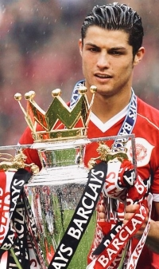 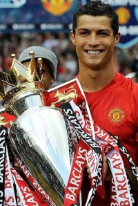 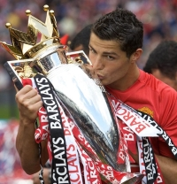
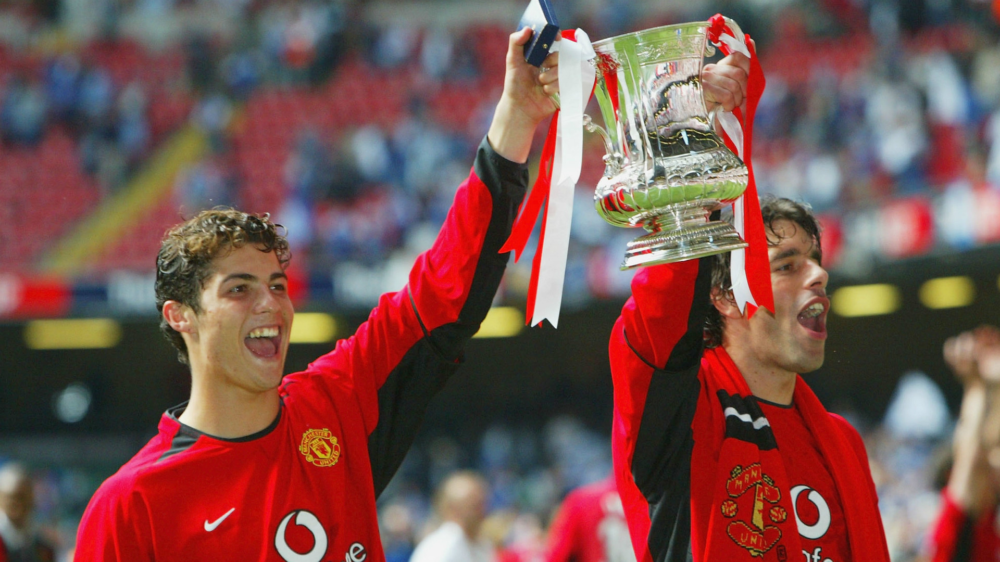
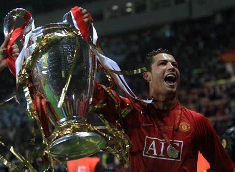
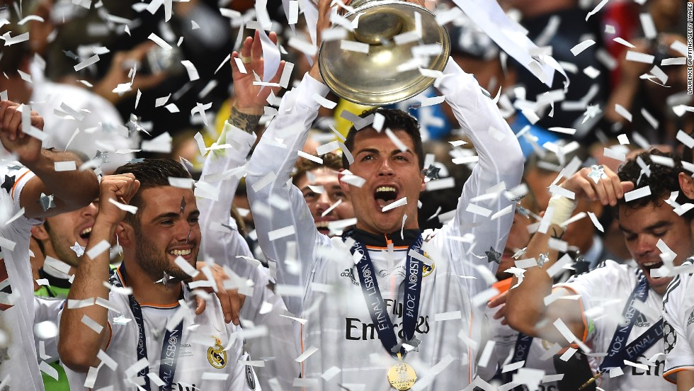 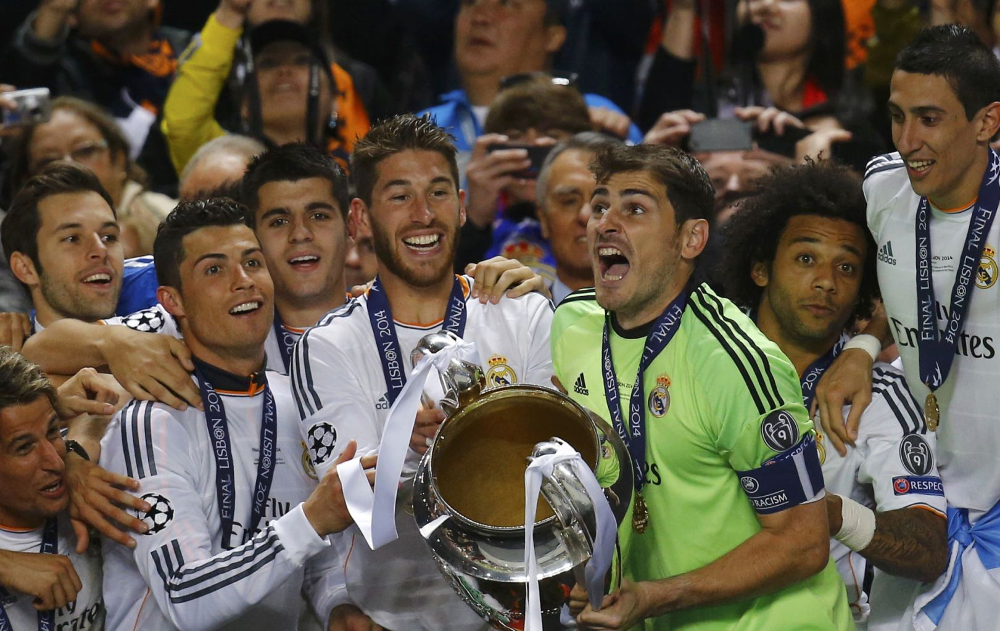 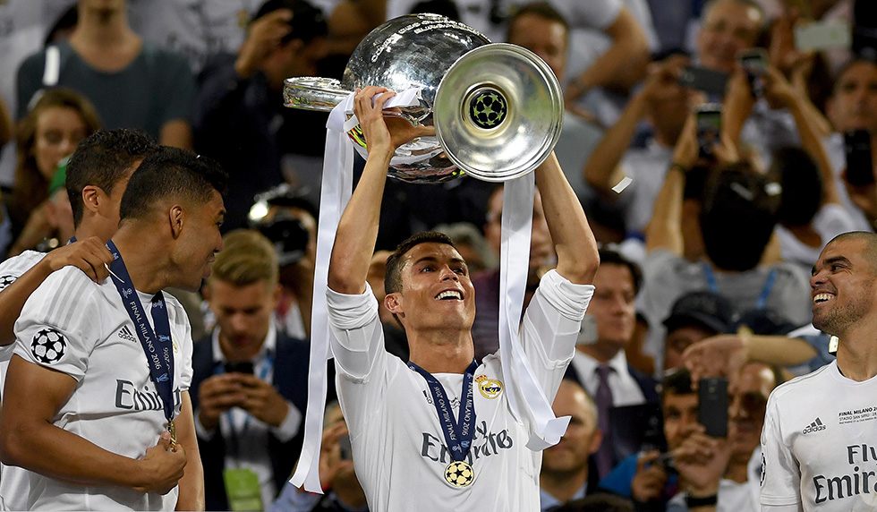 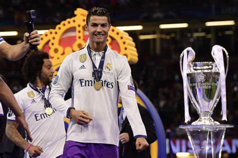
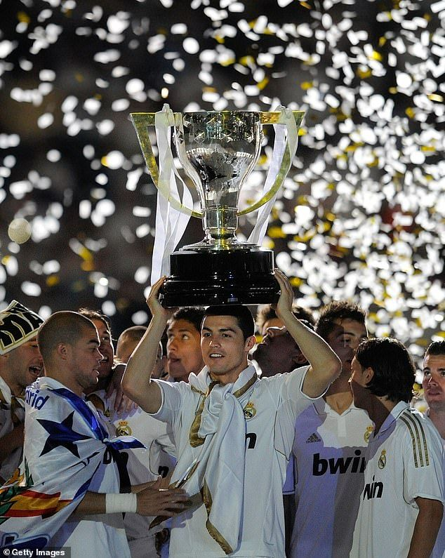 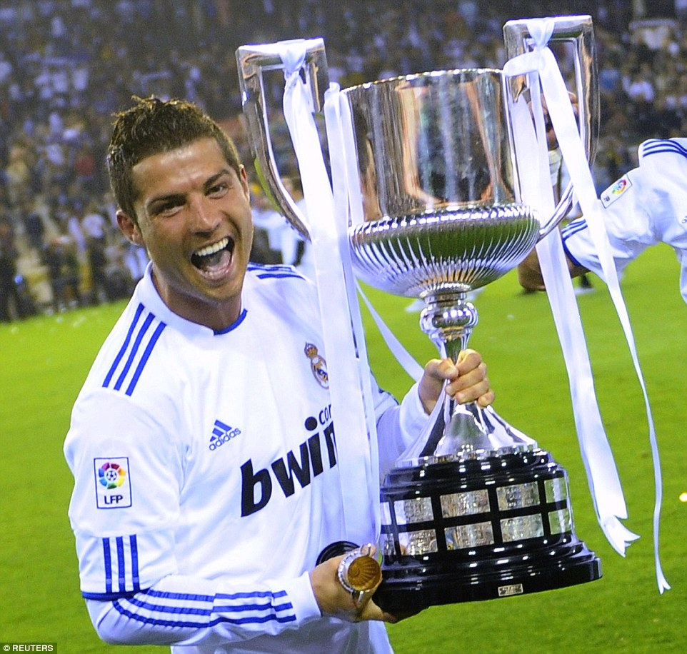
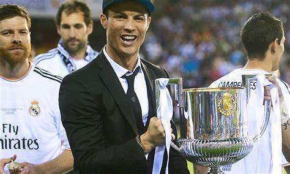 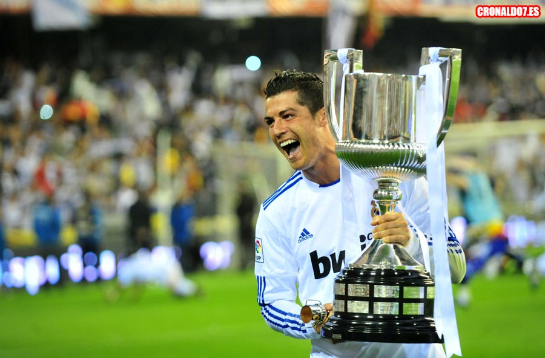
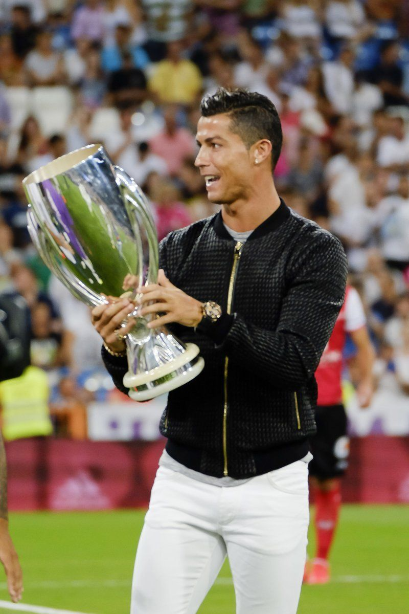 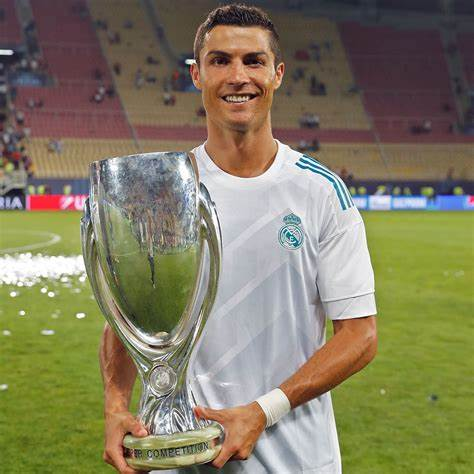 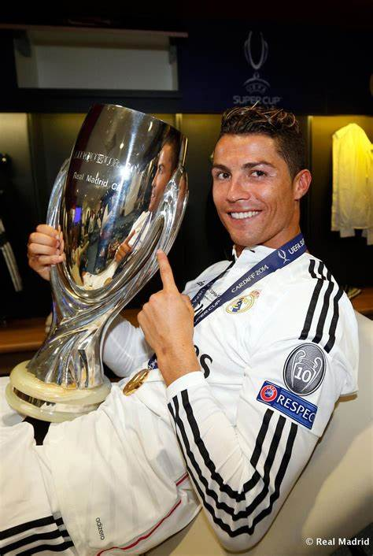
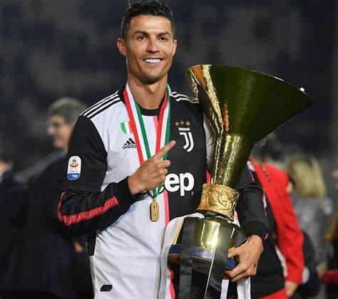 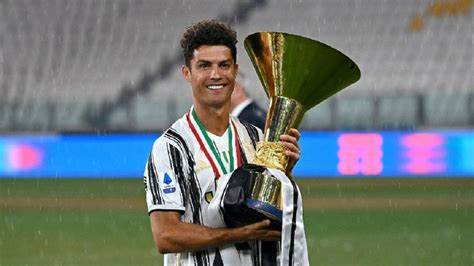
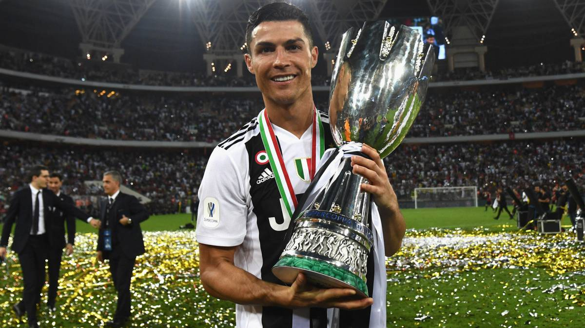 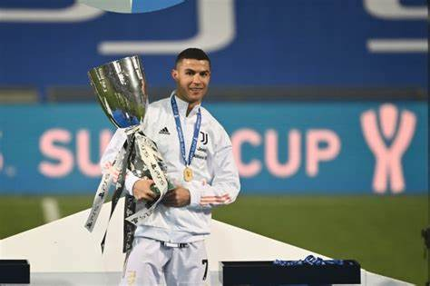
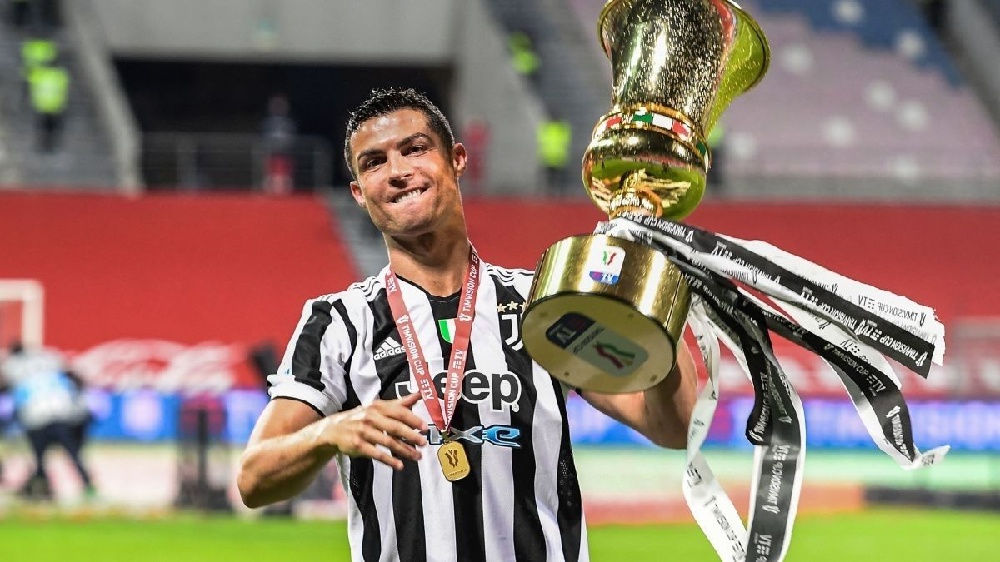
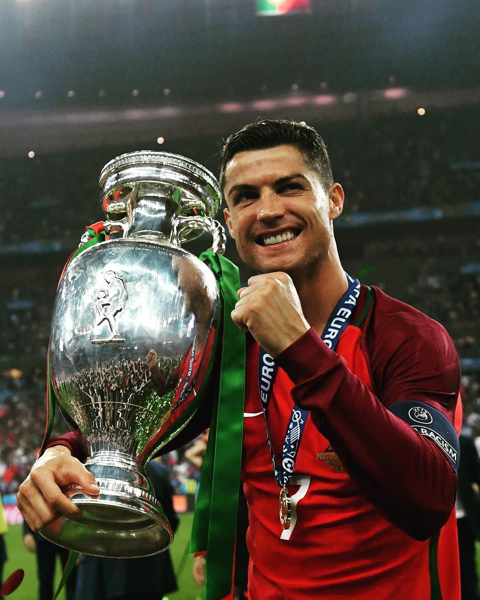
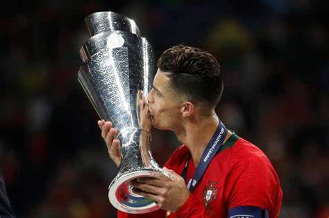